Sabores tradicionales que representan la cultura, historia y riqueza culinaria de Tolimán.
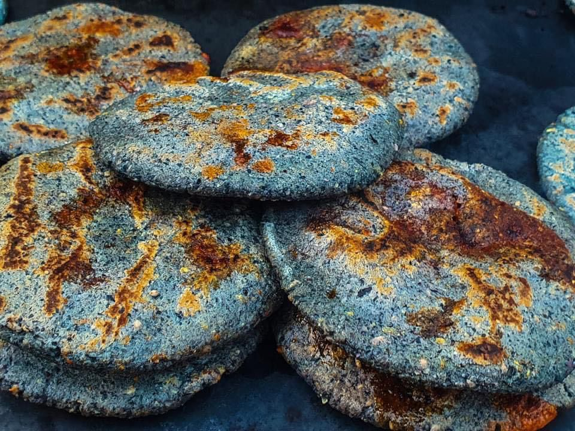
Platillo tradicional elaborado con masa de maíz.

Ingrediente típico de la región semidesértica.
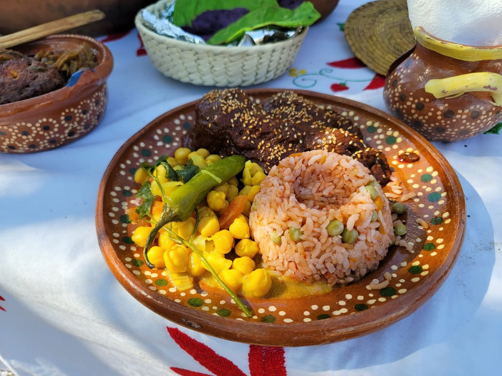
Platillo tradicional presente en festividades.
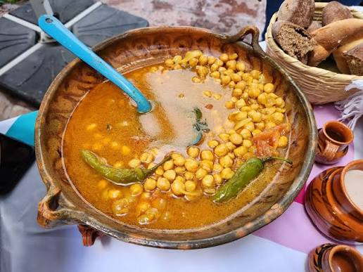
Platillo tradicional presente en las diferentes festividades.
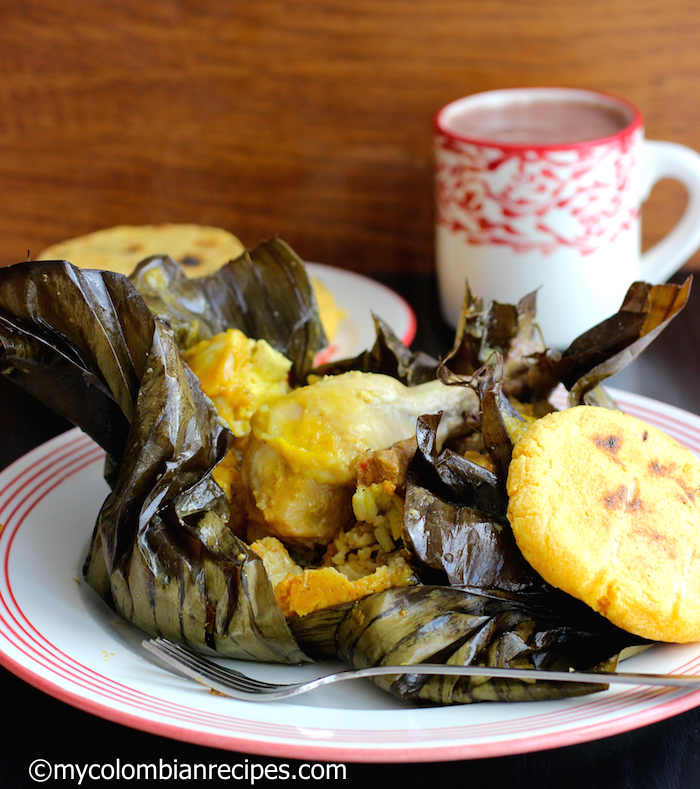
Platillo ceremonial que suele prepararse en festividades y celebraciones comunitarias.
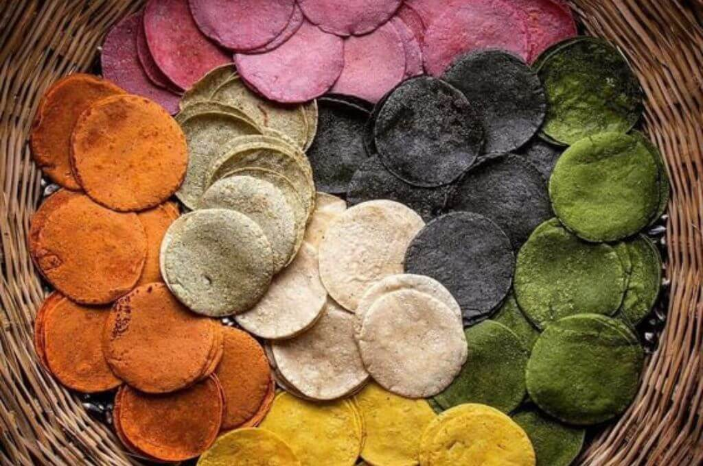
Hechas con maíces nativos y utilizadas tanto en la vida diaria como en eventos tradicionales.
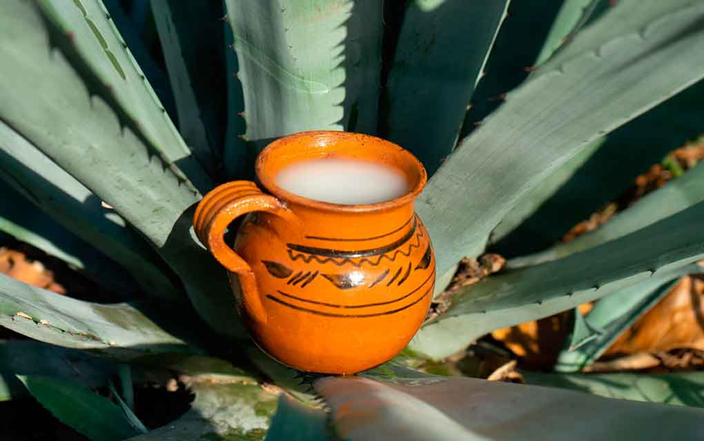
Bebida ancestral obtenida del maguey.
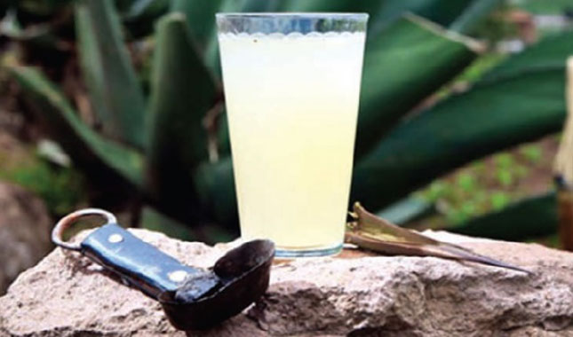
Bebida natural extraída del maguey.
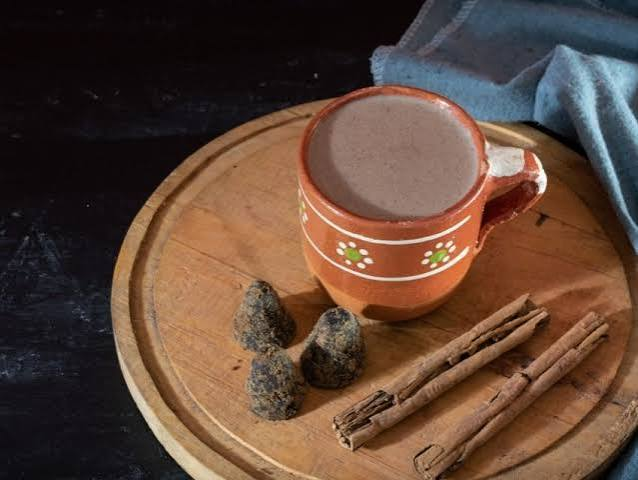
Tipo de atole elaborado con masa de maíz y chocolate, muy consumido durante temporadas frías y festividades.
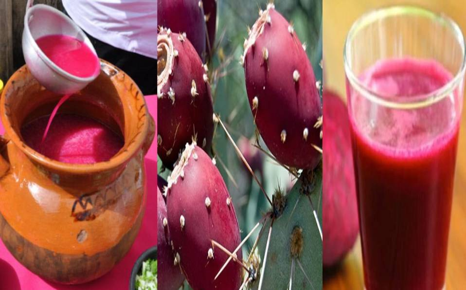
Bebida tradicional fermentada elaborada con tuna roja (fruto del nopal).
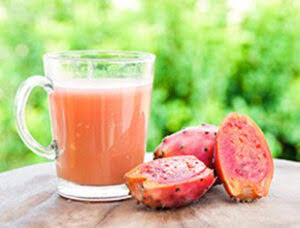
bebida refrescante preparada con el fruto del nopal conocido como xoconostle, de sabor ligeramente ácido.
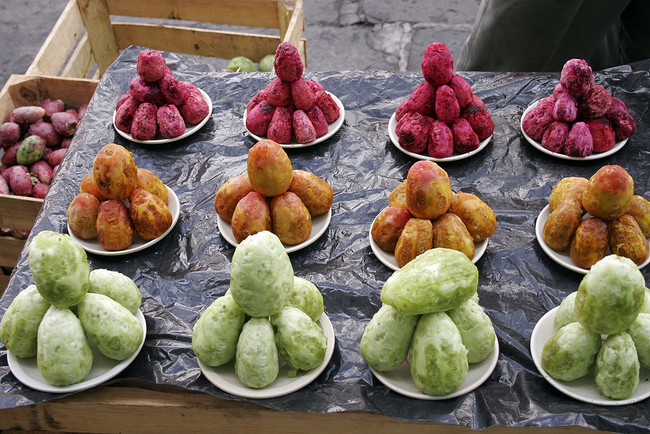
Fruto representativo de la región.
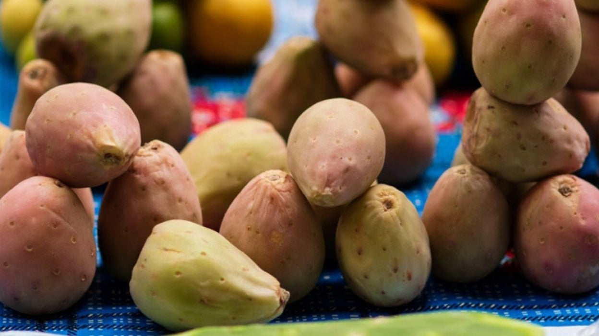
Fruto utilizado en diferentes platillos.

Fruto del cactus conocido como guamiche. Es pequeño, de color rojizo y sabor dulce.
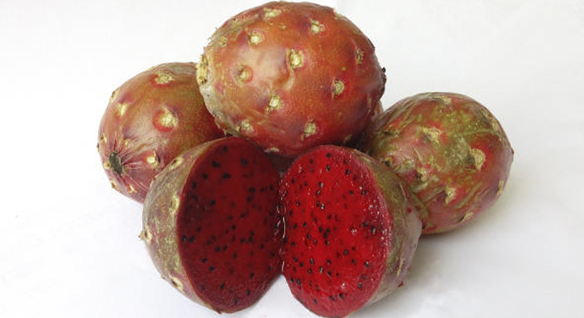
Fruto de algunas cactáceas de la región. Destaca por su sabor dulce y colores llamativos.
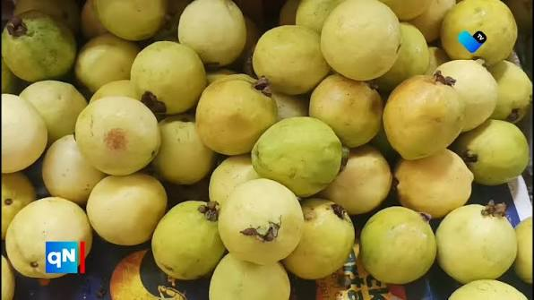
Fruto dulce y aromático. Se consume fresca y se utiliza en la elaboración de aguas, dulces, mermeladas y postres tradicionales.
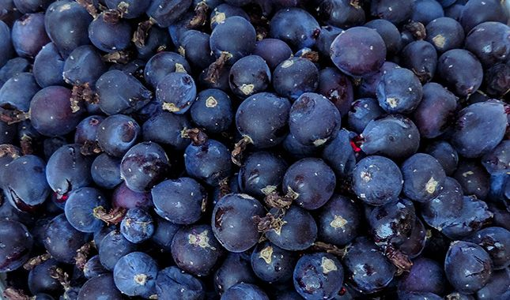
Fruto silvestre característico del semidesierto.


El pueblo de Tolimán conserva recetas transmitidas de generación en generación. Los visitantes pueden disfrutar de alimentos preparados de manera artesanal en mercados, fondas y festividades locales.
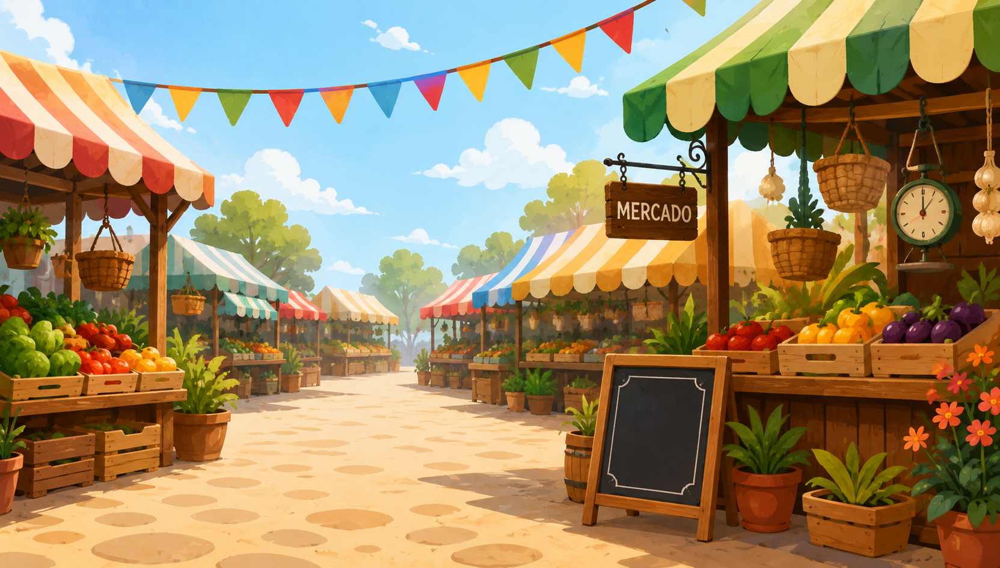